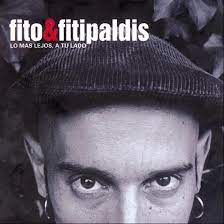

«Soldadito Marinero» es una canción del grupo musical Fito & Fitipaldis. La canción fue escrita por Adolfo Cabrales Mato (Fito). Está incluida en el álbum Lo más lejos a tu lado, siendo el segundo sencillo después de La casa por el tejado. Soldadito Marinero es la canción más escuchada en España de los 2000 en Spotify, con más de 100 millones de reproducciones y ha sido uno de los 5 sencillos más exitosos del grupo Fito & Fitipaldis és un grup espanyol creat el 1998 per Fito Cabrales amb la intenció de publicar cançons que no eren de l'estil de la seva altra banda, Platero y Tú. El tipus de música és molt variat, des del rock passant pel blues, el soul o el swing. Les lletres solen parlar d'històries personals. Fito & Fitipaldis és un grup espanyol creat el 1998 per Fito Cabrales amb la intenció de publicar cançons que no eren de l'estil de la seva altra banda, Platero y Tú. El tipus de música és molt variat, des del rock passant pel blues, el soul o el swing. Les lletres solen parlar d'històries personals. Fito & Fitipaldis és un grup espanyol creat el 1998 per Fito Cabrales amb la intenció de publicar cançons que no eren de l'estil de la seva altra banda, Platero y Tú. El tipus de música és molt variat, des del rock passant pel blues, el soul o el swing. Les lletres solen parlar d'històries personals. Fito & Fitipaldis és un grup espanyol creat el 1998 per Fito Cabrales amb la intenció de publicar cançons que no eren de l'estil de la seva altra banda, Platero y Tú. El tipus de música és molt variat, des del rock passant pel blues, el soul o el swing. Les lletres solen parlar d'històries personals. Fito & Fitipaldis és un grup espanyol creat el 1998 per Fito Cabrales amb la intenció de publicar cançons que no eren de l'estil de la seva altra banda, Platero y Tú. El tipus de música és molt variat, des del rock passant pel blues, el soul o el swing. Les lletres solen parlar d'històries personals. Fito & Fitipaldis és un grup espanyol creat el 1998 per Fito Cabrales amb la intenció de publicar cançons que no eren de l'estil de la seva altra banda, Platero y Tú. El tipus de música és molt variat, des del rock passant pel blues, el soul o el swing. Les lletres solen parlar d'històries personals. Fito & Fitipaldis és un grup espanyol creat el 1998 per Fito Cabrales amb la intenció de publicar cançons que no eren de l'estil de la seva altra banda, Platero y Tú. El tipus de música és molt variat, des del rock passant pel blues, el soul o el swing. Les lletres solen parlar d'històries personals. .